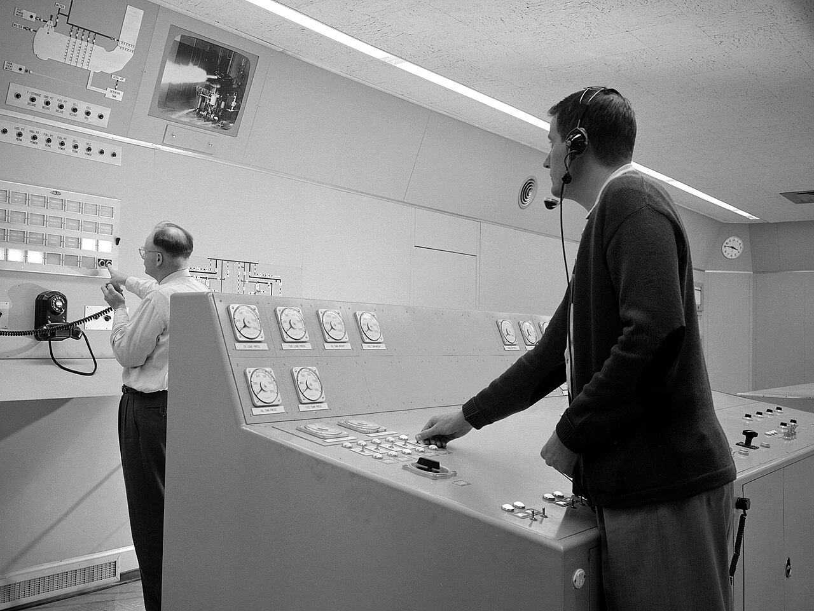
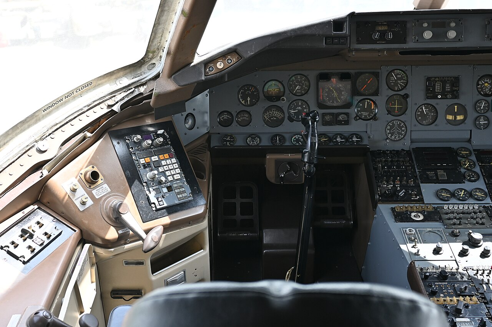
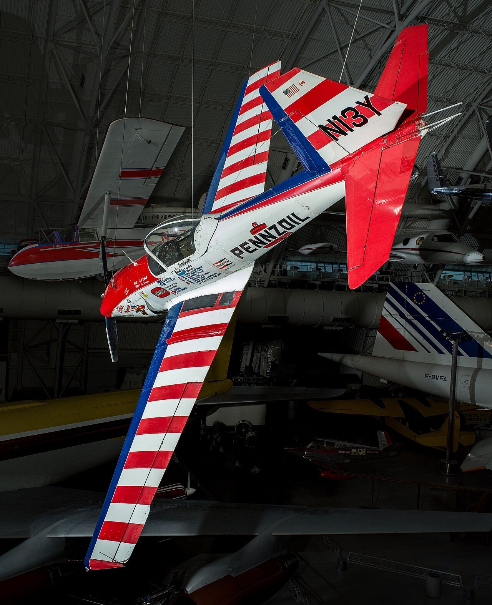
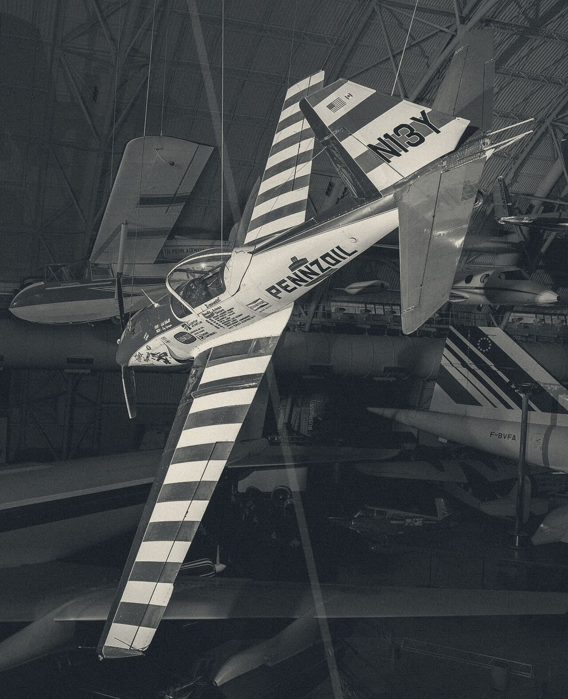

滚动就是拧参数旋钮
针笔是一次成线的：它不能回头，也不能填色，所以密度只能靠走线间距表达。滚动量映射为参数值而不是位移，桌面档每滚 100px 相当于频率档位走一格，窄屏每滚 90px 走一格；参数变一次，图就整体重排一次，图与参数是同一个对象的两面。画布本身不移动、不缩放、不做视差。
还没有输入音频。把一段 20 秒的录音拖到画布左侧，针笔会走完它
样本 A 220Hz ／ B 260Hz ／ C 180Hz，各 20 秒。落文件口只登记文件名与时长，不解析音频内容；换样本时整张图在 240ms 内被擦除为空白再重绘。
x 24x 402x 7808px 坐标格 / 24px 走纸安全区
走线 1840 段 / 上限 4000 段，余量 2160 段
参数面板 · 右挂 3 栏，上边缘比画布低 32px
频率220Hz
每滚 100px 走一格，共 15 格（120–400Hz）。每圈点数 N = 0.3636 × f，当前 80 点；波瓣数 = f ÷ 20，当前 11 瓣。
振幅0.62
每 3 格走一档，共 31 档（0.20–0.80）。外半径 R = min(318, 96 + 356a) = 316.7px；318px 是 24px 走纸安全区扣掉质心偏移与 ±33px 波瓣深度之后的余量。
走线间距1.2px
每 6 格换一档，只有三级 0.6 / 1.2 / 2.4px；画布按 8 倍图面输出，即 4.8 / 9.6 / 19.2px。间隙宽了圈数就少，窄了就多。
走线段数1840
段数 = 圈数 × 每圈点数，上限 4000 段。当前 23 圈 × 80 点 = 1840 段，余量 2160 段。
| 参数 | 当前值 | 档位 | 公式 |
|---|---|---|---|
| 频率 f | 220Hz | 第 6 档 / 共 15 档 | f = 120 + 20 × ((n + 5) mod 15) |
| 振幅 a | 0.62 | 第 22 档 / 共 31 档 | a = 0.20 + 0.02 × ((n ÷ 3 取整 + 21) mod 31) |
| 走线间距 s | 1.2px | 第 2 档 / 共 3 档 | s = {0.6, 1.2, 2.4}[((n ÷ 6 取整 + 1) mod 3)] |
| 每圈点数 N | 80 | 随 f 变 | N = round(f × 0.3636) |
| 圈数 C | 23 | 下限 6 圈 | C = max(6, round((min(318, 96 + 356a) − 96) ÷ (8s))) |
| 走线段数 C × N | 1840 | 上限 4000，余量 2160 | 请求段数超过 4000 时只绘制前 4000 段，报 PLOT-4000 |
走线段数超出上限
走线段数超出上限（错误码 PLOT-4000）：本次只绘制前 4000 段，把走线间距提到 1.2px 后可完整重绘
越限是算出来的：间距 0.6px 时画布间距只有 4.8px，圈数被撑到 46 圈；滑杆拉到极值 400Hz、振幅 0.80 时每圈 145 点，46 × 145 = 6670 段，超了 2670 段。停笔落在第 28 圈的 58.6% 处，也就是第 4000 段——下面这张检视图里，圈 0 到圈 26 走完，圈 27 只走到六成，更外面的十九圈没落笔。
- 越限参数
- 频率
400Hz· 振幅0.80· 走线间距0.6px - 请求段数
6670段（46 圈 × 145 点）- 实际落笔
4000段，停笔于圈 27 的 58.6%，空出 19 圈- 滚动第一处越限
- 桌面滚到 1600px（n = 16）：240Hz / 0.72 / 0.6px →
4176段，停笔于圈 45 的 97.7% - 检视图画法
- 每 4 圈抽 1 圈、每圈按 1/6 采样（145 → 25 点）重画，圈的半径、4.8px 圈间距与停笔位置与真图一致
- 修正后
- 间距回到
1.2px：23 圈 × 145 点 =3335段，落回上限内
按下去会把走线间距这一档从滚动里摘出来、写死 1.2px，频率与振幅两档不动；按「交给滚动」才把它还回去。
关键视觉元素
- 针笔单线走位线宽
0.35px单线，不回头、不交叉复位，线端方头，禁止任何填充色块与粗描边。23 圈由同一条半径函数生成：r = 96 + i × 9.6 + t × (25 × sin(11θ + 0.35) + 8 × sin(13θ + 2.1))，θ = 2πj ÷ 80，t = (i ÷ 22) 的 1.6 次方；相邻两圈半径差最小7.26px，整张图数学上不可能交叉。 - 坐标网格线宽
0.2px、间距8px、不透明度18%，只出现在画布内、止于 24px 走纸安全区；网格与走线之间不叠加第三种线，全图只有 0.2px 与 0.35px 两级线宽。 - 声场图例量级用走线间距表达：0.6px / 1.2px / 2.4px 三级对应三个量级，不用颜色区分；图例本身就是真实走线小段，上半 1:1、下半 8 倍。
- 图标逻辑绘图仪符号全部自绘：笔架是倒梯形加竖针、走纸轮是圆加八个齿、原点是两个同心方框，都在 20 单位网格里、
0.5px单线，没有一个 Emoji。 - 图像处理图形一律矢量化输出：走线是 SVG 路径，
stroke-width: 0.35配vector-effect: non-scaling-stroke，缩放时线宽恒定。另有三处只是纸的材质——纸纹叠三层、走纸轮定位格一层、走纸痕叠两层，全挂在伪元素上，只压纸面，不碰图形。
针笔与仪表图版
六张图版取自公开档案与 NASA 图像库，题材是海图、座舱仪表板、遥测面板与 NASA 控制台；作者与许可逐张标在图片下方，全部可回溯原件页。

图版 01 NACA 火箭发动机试验台控制室：整面墙的刻度表排成一列，读数的疏密就是量级的疏密。NASA 格伦研究中心 · 公有领域 · Wikimedia Commons（方案内复用素材） 
图版 02 老式客机驾驶舱的仪表板：圆形仪表按飞行姿态与动力分两区排布，指针各占一格。PattayaPatrol · CC BY-SA 4.0 · Wikimedia Commons（方案内复用素材） 
图版 03 发现号轨道飞行器座舱通电：玻璃座舱的多功能显示子系统装到一半，面板读数已经像素化，刻线还是机械刻度。NASA · 公有领域 · NASA 图像库 / Wikimedia Commons（方案内复用素材） 
图版 04 德哈维兰 DHC-1 花栗鼠：机翼上的红白条纹是最早的等间距条纹样板，间距一致、方向单一。Art Scholl／De Havilland Canada Ltd · CC0 · Wikimedia Commons（方案内复用素材） 
图版 05 同一架花栗鼠的双色调处理：条纹被压成深浅两级，剩下的信息只有间距与方向。原件未标注作者 · 许可见原件页 · Wikimedia Commons（方案内复用素材） 
图版 06 奥斯陆峡湾航海图：等深线在峡湾口收成一束、在主航道放开，图例在空白海面上单独立框，与走线密度无关。原件未标注作者 · 许可见原件页 · Wikimedia Commons（方案内复用素材）
三级间距映射
量级只映射到间距这一个量上，颜色不参与。下表按频率 220Hz、振幅 0.62（外半径 316.7px）算：间距越窄圈数越多，段数逼近上限。
| 量级 | 声压级带 | 走线间距 | 画布间距 | 圈数 C | 走线段数 |
|---|---|---|---|---|---|
| 量级 I | 85–94dB | 0.6px | 4.8px | 46 | 3680（240Hz 以上越限） |
| 量级 II | 70–84dB | 1.2px | 9.6px | 23 | 1840（默认档） |
| 量级 III | 55–69dB | 2.4px | 19.2px | 11 | 880 |
三级间距的写法：同一圆心、同一波瓣函数，只改圈间距；0.6px 与 1.2px 差一倍，圈数就差一倍。频率只改每圈点数与波瓣数，不改半径。这也是本案最难被复用到别处的地方——换掉音频来源之后，这套映射仍然只对应声压级的量级关系。
断点行为
四档断点改的是画布尺寸、面板位置、重绘帧率与滚动步进，不改的是滚动到参数的映射关系：每滚一格仍然只走一个频率档位。
| 档位 | 画布边长 | 参数面板 | 重绘 | 滚动步进 | 滑杆 | 段数上限 |
|---|---|---|---|---|---|---|
| ≥1440px | 视口高减 96px，1:1（1440×900 档 = 804px） | 右挂 3 栏 324px，上边缘比画布低 32px | 60fps | 100px 一格 | 无 | 4000 段 |
| 1024–1439px | 视口宽减 120px，仍 1:1 | 折到画布下方、横排 3 列 | 45fps | 100px 一格 | 无 | 4000 段 |
| <1024px | 视口宽减 24px，仍 1:1 | 折到画布下方、单列 | 30fps | 90px 一格 | 频率 / 振幅 / 走线间距三个滑杆 | 4000 段 |
| <768px | 视口宽减 16px，仍 1:1 | 折到画布下方、单列 | 30fps | 90px 一格 | 三个滑杆改纵向两行排列 | 4000 段 |
动效与降级
滚动到参数的映射每帧只算一次，重绘只改路径的 d 属性，不重建节点。重排时长 420ms，阻尼无过冲：旧线淡出 30%，新线按走线顺序逐段画出。
- 加载画布先出网格（
180ms），针笔随后从原点起笔、按走线顺序画完，总1400ms，缓动线性；每圈的起笔时刻与它自己的线长成正比，笔尖在纸上一路匀速。 - 悬停指针停到某条等高线上，该线加粗到
0.5px并显示这一圈的声压级，140ms；读数从圈 0 的94.0dB到圈 22 的41.2dB，每圈差2.4dB。 - 转场换音频样本时整张图在
240ms内被擦除为空白，再按新样本的基准频率重绘；擦除期间画布上不留走线。 - 光标画布内是 16px 细十字加
0.35px单圈，圈线与走线同宽；指针离开画布就换回系统光标。 - 微交互拖滑杆或滚过一格时，画布右下角的段数读数实时跳动、不做补间；越限那一次当场翻成
PLOT-4000。
减少动态时的写法（prefers-reduced-motion: reduce）：参数每变一格，整图在 120ms 内整幅替换，不做逐段画出；走线间距仍分 0.6 / 1.2 / 2.4px 三级、外半径上限仍 318px、段数上限仍 4000 段、越限仍报 PLOT-4000；窄屏把 90px 一格的步进交给三个滑杆的左右键，每按一次 1 档，读数即时改写；画布仍 1:1，24px 走纸安全区与 0.2px 网格照旧。